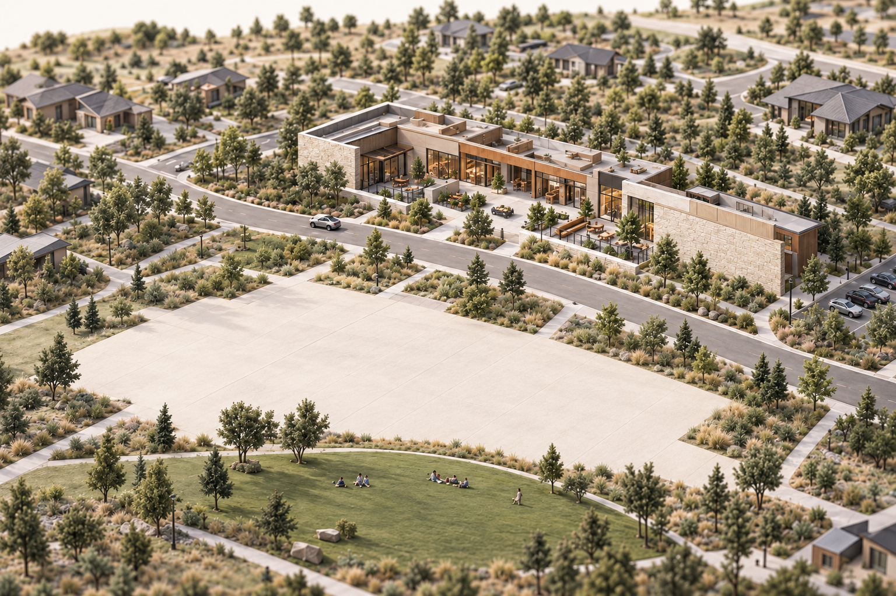

Sterling Ranch, opened up.
Opening the neighborhood…
Providence / Sterling Center

Illustrative architecture & placementOpen a place. See what belongs together.
Around the neighborhood
A little time outside
Take the long way home.
Choose a walk, see the path, and find a place to stop along the way.
The neighborhood taking shape
Room for what’s next.
Schools, gathering places and more room to play. Open a project for its status, source and planned features.
Project information is a September 13 snapshot. Dates can change; the linked project pages carry updates.
Places to know